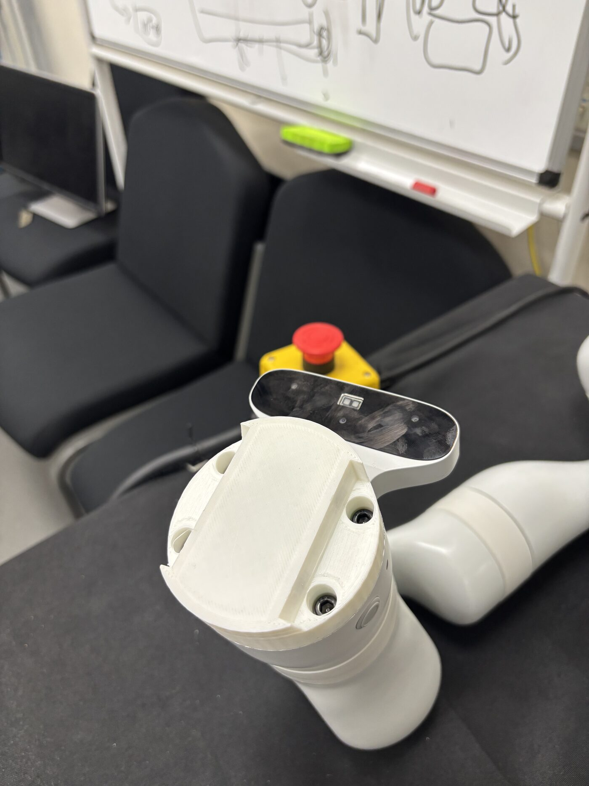
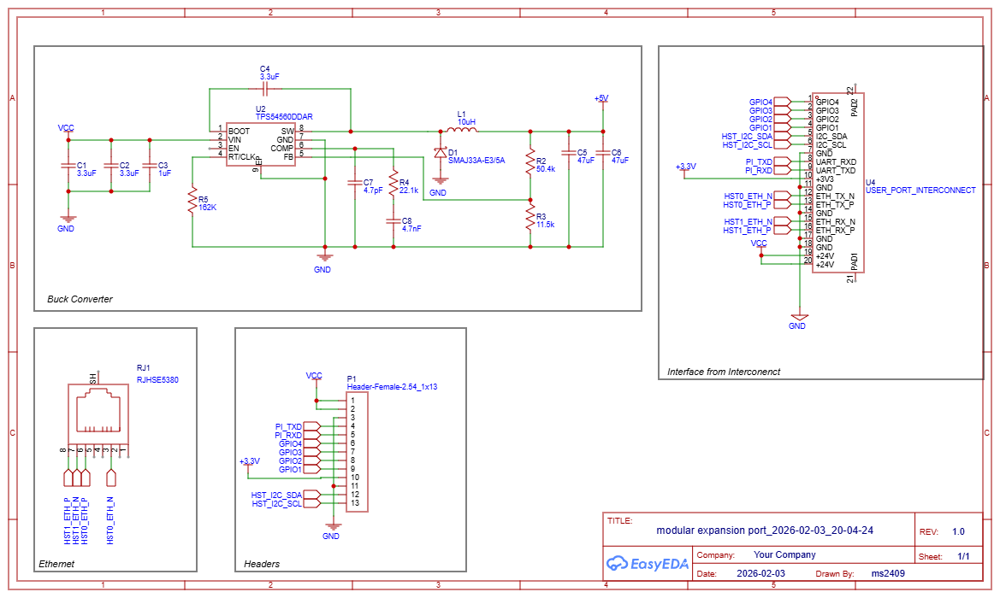
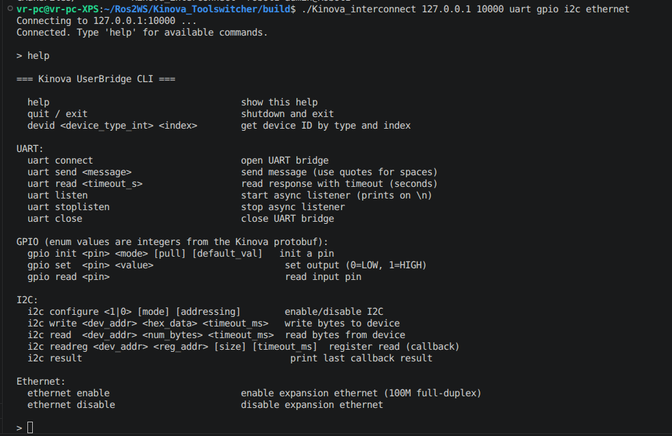
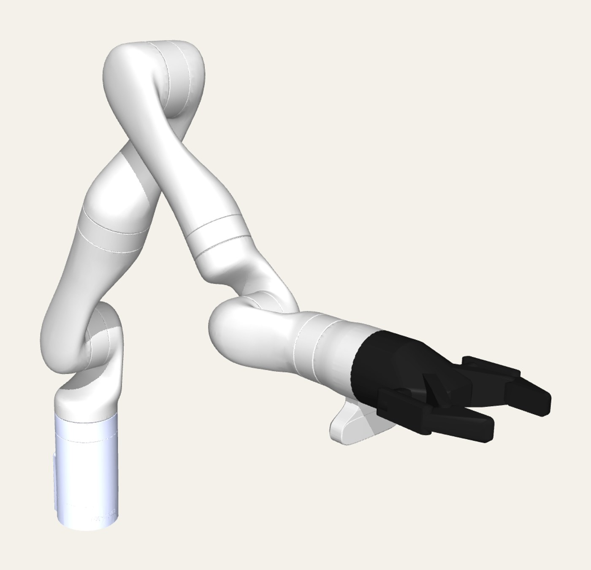

Whole-stack robotics
ROS 2 orchestration, machine vision, a C++ bridge over a vendor SDK, a custom PCB and RTOS firmware, designed and built as one system. I can work at whichever layer your problem lives in.
Open to robotics, embedded & controls roles · UK or relocation
Mahmoud Sadeq — Robotics & Mechatronics Engineer
First-Class BEng from the University of Sussex (2026). I take systems from the PCB and firmware up to ROS 2 orchestration, then prove they hold up with logged, repeatable trials. My dissertation robot swaps its own tools and recovers when an exchange fails, with nobody in the loop.

What I bring to a team
ROS 2 orchestration, machine vision, a C++ bridge over a vendor SDK, a custom PCB and RTOS firmware, designed and built as one system. I can work at whichever layer your problem lives in.
Fault injection, cycle logging and long unattended trials. I force failures to test recovery rather than hoping they won't happen, and I publish the failing test instead of hiding it.
A RISC-V CPU written from scratch in SystemVerilog, register-level C under hard timing, and serial protocols designed to survive a lost reply. The bottom of the stack doesn't scare me.
Selected work
Every number on this page is measured, logged, or in a repository. Each project opens with the short version; the engineering deep-dives are underneath.


A low-cost, magnetically actuated, ISO 9409-compliant automatic tool changer for the Kinova Gen3, plus the software to run it with nobody watching.
101 intervals · mean 36.2 s · σ 0.18 s
Every one of the 101 intervals sits inside a 0.7-second band (the y-axis spans 35–37 s to make that visible). The slow ~0.6 s drift across the session is real, and the kind of thing you only notice when you log everything. Hover, or focus and use the arrow keys, to read swaps. The 39.3 s headline is command-to-mounted; this cadence includes the return leg.
| Switch | Tool mounted | Interval (s) |
|---|
Selected layer
toolswitcher_node, the ROS 2 orchestrator: decides which tool the task needs, sequences the swap, and watches every exchange for faults — the part that lets the arm run with nobody in the room.
Select a layer to see what it does.
Platform behind my first-author ICRA paper, pending submission September 2026. Repository private while the paper is in preparation.

The multi-robot platform for Fractal Impedance Control at Sussex's Transformative Robotics Lab (TRL): real-time compliant control and teleoperation across Franka and Kinova arms, with a MuJoCo simulation backend.
24 authored commits, May–June 2026 (merges and stashes excluded), from the repo's git history
Each dot is a day's commits in one lane; bigger dot, more commits. Hover, or focus and use the arrow keys, to read each cluster. The early burst is the tool-switcher landing alongside the reliability fixes it exposed; June is the VR bridge and control-tuning support. The repo is the lab's and stays private.
A full RV32I processor written from scratch in SystemVerilog, validated against the official riscv-tests suite with self-checking testbenches, then run on real hardware: 1.36 CoreMark/MHz on a Xilinx Artix-7, with the benchmark output CRC-checked. A five-stage pipeline with hazard detection and forwarding is in progress.
Icarus Verilog · 3 Aug 2026 · 40 of 41 pass
✕ ma_data fails, and I've left it showing: misaligned-access traps aren't implemented yet, and I'd rather you see the failing test than wonder what I dropped. – fence_i is skipped: it needs self-modifying code, which a Harvard instruction memory can't do.
Register-level C and C++ under hard timing: ADC drivers, stepper control, sensor sampling and a bare-metal data-acquisition module. The MEES carousel runs on my public fork of the Prusa i3 firmware: the carousel logic, serial protocol and application entry point are mine; the retained hardware-abstraction modules are Prusa Research's.
ASCII over UART · 115200 8N1 · OK only after motion physically completes
host → N1 TOOL A dev → OK N1 host → N2 HOME dev → ERROR PINDA home failed N2
Select a command to see what it does. Any command can carry an N<seq> prefix, echoed in the reply, so a lost reply can be retried without wondering whether the original command already ran.
Control-engineering lead for a university team's design study: sensor- and control-redundant navigation that holds a usable position and state estimate under GPS denial and degrades gracefully as sensors drop out. Concept and early design only; the airframe was never built, and I'd rather say so here than have you find out in an interview.
Experience & education
University of Sussex · First Class Honours
Dissertation: MEES, the autonomous tool-changing system above, now the basis of a first-author paper.
Transformative Robotics Lab (TRL), University of Sussex
Extensions, device integration and reliability fixes on the lab's multi-robot compliant-control platform; 24 authored commits.
Redundant navigation under GPS denial
Led the control side of a concept-stage design for sensor- and control-redundant navigation.
Technical skills
About
I've been programming for seven years, mostly software; the last few have pulled me toward hardware, and robotics is where the two meet. I care more about whether something holds up once it's actually running than whether it demos cleanly — most of my favourite commits are fixes nobody will ever notice.
I speak English (C1 certified; my whole degree was taught in it) and Arabic (native). I'm based in Brighton, UK, and happy to relocate for the right team.
Let's talk
Based in Brighton, UK, and open to relocating for the right team.